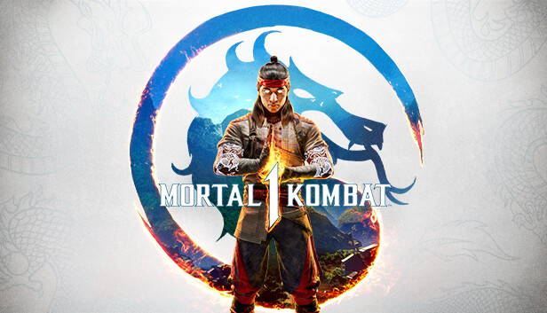
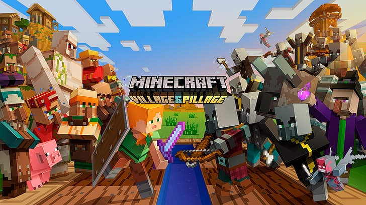
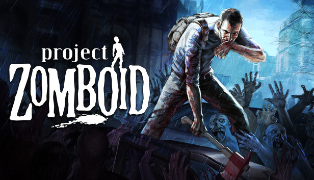

Juegos Populares


Los mejores juegos de acción
 The Last of Us Parte II es una intensa historia de venganza y
redención en un mundo postapocalíptico devastado por una pandemia. Con una narrativa
emocional y un gameplay brutal, acompaña a Ellie en su lucha por sobrevivir y encontrar
justicia.
The Last of Us Parte II es una intensa historia de venganza y
redención en un mundo postapocalíptico devastado por una pandemia. Con una narrativa
emocional y un gameplay brutal, acompaña a Ellie en su lucha por sobrevivir y encontrar
justicia.
 Call of Duty: Modern Warfare II es un videojuego de disparos en
primera persona que sigue las intensas misiones de un grupo de élite militar mientras
luchan contra una amenaza global. Con una campaña llena de acción y un modo multijugador
adictivo, ofrece una experiencia de guerra moderna con gráficos realistas y mecánicas de
juego mejoradas.
Call of Duty: Modern Warfare II es un videojuego de disparos en
primera persona que sigue las intensas misiones de un grupo de élite militar mientras
luchan contra una amenaza global. Con una campaña llena de acción y un modo multijugador
adictivo, ofrece una experiencia de guerra moderna con gráficos realistas y mecánicas de
juego mejoradas.
 Resident Evil 4 es un juego de terror y acción que sigue a Leon S.
Kennedy, un agente del gobierno, mientras intenta rescatar a la hija del presidente de
los EE. UU. en un remoto pueblo europeo infestado por criaturas mutadas. Con una
jugabilidad dinámica, combates estratégicos y una atmósfera tensa, el juego es
reconocido por revitalizar la serie con su innovador enfoque en la perspectiva en
tercera persona y la acción intensa.
Resident Evil 4 es un juego de terror y acción que sigue a Leon S.
Kennedy, un agente del gobierno, mientras intenta rescatar a la hija del presidente de
los EE. UU. en un remoto pueblo europeo infestado por criaturas mutadas. Con una
jugabilidad dinámica, combates estratégicos y una atmósfera tensa, el juego es
reconocido por revitalizar la serie con su innovador enfoque en la perspectiva en
tercera persona y la acción intensa.
 God of War Ragnarök es un juego de acción y aventura que sigue a
Kratos y su hijo Atreus mientras enfrentan los eventos del Ragnarök, la catástrofe del
fin del mundo en la mitología nórdica. Con una narrativa épica, combate brutal y
hermosos paisajes, el juego profundiza en la relación padre-hijo mientras exploran los
reinos y luchan contra dioses y criaturas mitológicas.
God of War Ragnarök es un juego de acción y aventura que sigue a
Kratos y su hijo Atreus mientras enfrentan los eventos del Ragnarök, la catástrofe del
fin del mundo en la mitología nórdica. Con una narrativa épica, combate brutal y
hermosos paisajes, el juego profundiza en la relación padre-hijo mientras exploran los
reinos y luchan contra dioses y criaturas mitológicas.
Los mejores juegos de aventura
 Grand Theft Auto V es un videojuego de acción y aventura en mundo
abierto que sigue las historias entrelazadas de tres criminales mientras realizan robos
y enfrentan a la ley en la ciudad ficticia de Los Santos. Con un vasto mundo para
explorar, una trama envolvente y un modo multijugador en línea, ofrece una experiencia
de libertad total y acción sin fin.
Grand Theft Auto V es un videojuego de acción y aventura en mundo
abierto que sigue las historias entrelazadas de tres criminales mientras realizan robos
y enfrentan a la ley en la ciudad ficticia de Los Santos. Con un vasto mundo para
explorar, una trama envolvente y un modo multijugador en línea, ofrece una experiencia
de libertad total y acción sin fin.
 Back 4 Blood es un juego de disparos cooperativo en primera
persona donde los jugadores luchan contra hordas de zombis en un mundo
post-apocalíptico. Con un enfoque en el trabajo en equipo y una acción frenética, el
juego ofrece una experiencia de supervivencia desafiante y llena de adrenalina.
Back 4 Blood es un juego de disparos cooperativo en primera
persona donde los jugadores luchan contra hordas de zombis en un mundo
post-apocalíptico. Con un enfoque en el trabajo en equipo y una acción frenética, el
juego ofrece una experiencia de supervivencia desafiante y llena de adrenalina.
 Ghost of Tsushima es un juego de acción y aventura ambientado en
el Japón feudal durante la invasión mongola. Encarnas a Jin Sakai, un samurái que debe
romper sus tradiciones para proteger su tierra con honor y sigilo.
Ghost of Tsushima es un juego de acción y aventura ambientado en
el Japón feudal durante la invasión mongola. Encarnas a Jin Sakai, un samurái que debe
romper sus tradiciones para proteger su tierra con honor y sigilo.
 Uncharted 4: A Thief's End es un juego de acción y aventura en
tercera persona que sigue a Nathan Drake, un cazador de tesoros retirado, mientras se ve
arrastrado a una última aventura para encontrar un antiguo tesoro. Con impresionantes
gráficos, una narrativa épica y mecánicas de juego fluidas, el título combina
exploración, resolución de acertijos y combates intensos en una experiencia
cinematográfica.
Uncharted 4: A Thief's End es un juego de acción y aventura en
tercera persona que sigue a Nathan Drake, un cazador de tesoros retirado, mientras se ve
arrastrado a una última aventura para encontrar un antiguo tesoro. Con impresionantes
gráficos, una narrativa épica y mecánicas de juego fluidas, el título combina
exploración, resolución de acertijos y combates intensos en una experiencia
cinematográfica.
Los mejores juegos de deportes
 EA Sports FC 25 es la segunda entrega de la saga FC y se lanzó el
27 de septiembre de 2024 para consolas y PC. Incorpora mejoras en la jugabilidad como el
sistema táctico FC IQ, nuevos roles de jugador, un modo Rush 5v5 y mejoras en los
porteros, además de ampliar el contenido con más ligas femeninas y novedades en Ultimate
Team.
EA Sports FC 25 es la segunda entrega de la saga FC y se lanzó el
27 de septiembre de 2024 para consolas y PC. Incorpora mejoras en la jugabilidad como el
sistema táctico FC IQ, nuevos roles de jugador, un modo Rush 5v5 y mejoras en los
porteros, además de ampliar el contenido con más ligas femeninas y novedades en Ultimate
Team.
 F1 25 es un videojuego de carreras desarrollado por Codemasters y
publicado por EA Sports. Es la decimoctava entrada en la serie F1 y cuenta con la
licencia para los campeonatos de Fórmula Uno y Fórmula 2 de la temporada 2025.
F1 25 es un videojuego de carreras desarrollado por Codemasters y
publicado por EA Sports. Es la decimoctava entrada en la serie F1 y cuenta con la
licencia para los campeonatos de Fórmula Uno y Fórmula 2 de la temporada 2025.
 NBA 2K25 lleva la serie a un nuevo nivel con un realismo
impresionante en sus gráficos y movimientos, ofreciendo una jugabilidad mejorada tanto
en partidos individuales como en modos de carrera. Los jugadores pueden sumergirse en la
cultura del baloncesto, con modos que incluyen la NBA, el WNBA y la creación de un
jugador en modo MyCareer.
NBA 2K25 lleva la serie a un nuevo nivel con un realismo
impresionante en sus gráficos y movimientos, ofreciendo una jugabilidad mejorada tanto
en partidos individuales como en modos de carrera. Los jugadores pueden sumergirse en la
cultura del baloncesto, con modos que incluyen la NBA, el WNBA y la creación de un
jugador en modo MyCareer.
 Gran Turismo 7 ofrece una experiencia de simulación de conducción
inigualable con más de 400 coches, circuitos icónicos y un sistema de física avanzado.
Los jugadores pueden disfrutar de carreras tanto en modo campaña como en línea, con una
personalización profunda para cada vehículo y un enfoque realista en cada aspecto del
automovilismo.
Gran Turismo 7 ofrece una experiencia de simulación de conducción
inigualable con más de 400 coches, circuitos icónicos y un sistema de física avanzado.
Los jugadores pueden disfrutar de carreras tanto en modo campaña como en línea, con una
personalización profunda para cada vehículo y un enfoque realista en cada aspecto del
automovilismo.
Los mejores juegos de lucha

Mortal Kombat 1 es un juego de lucha icónico que presenta combates
intensos y sangrientos entre personajes únicos con habilidades especiales. Los jugadores
deben dominar movimientos especiales, combos y los famosos fatalities para derrotar a
sus oponentes y obtener la victoria.
 Tekken 7 es un juego de lucha de la famosa franquicia Tekken,
donde los jugadores eligen entre una amplia variedad de personajes para enfrentarse en
combates espectaculares. Con mecánicas de lucha profundas, combos devastadores y un modo
historia que explora los conflictos familiares, Tekken 7 ofrece una experiencia de lucha
emocionante y estratégica.
Tekken 7 es un juego de lucha de la famosa franquicia Tekken,
donde los jugadores eligen entre una amplia variedad de personajes para enfrentarse en
combates espectaculares. Con mecánicas de lucha profundas, combos devastadores y un modo
historia que explora los conflictos familiares, Tekken 7 ofrece una experiencia de lucha
emocionante y estratégica.
 Street Fighter es una serie de videojuegos de lucha clásica que se
centra en combates entre diversos luchadores con habilidades únicas y movimientos
especiales. Con su icónica mecánica de "hadouken" y otros ataques emblemáticos, Street
Fighter ha sido fundamental en la evolución de los juegos de lucha, ofreciendo batallas
emocionantes y competitivas.
Street Fighter es una serie de videojuegos de lucha clásica que se
centra en combates entre diversos luchadores con habilidades únicas y movimientos
especiales. Con su icónica mecánica de "hadouken" y otros ataques emblemáticos, Street
Fighter ha sido fundamental en la evolución de los juegos de lucha, ofreciendo batallas
emocionantes y competitivas.
 Mortal Kombat 11 es la última entrega de la icónica saga de juegos
de lucha, conocida por sus combates sangrientos y sus personajes únicos. El juego ofrece
una jugabilidad mejorada, nuevos fatalities, y una historia que continúa explorando el
conflicto entre los campeones de la Tierra y los villanos interdimensionales, con un
enfoque en la personalización de los luchadores y el modo multijugador.
Mortal Kombat 11 es la última entrega de la icónica saga de juegos
de lucha, conocida por sus combates sangrientos y sus personajes únicos. El juego ofrece
una jugabilidad mejorada, nuevos fatalities, y una historia que continúa explorando el
conflicto entre los campeones de la Tierra y los villanos interdimensionales, con un
enfoque en la personalización de los luchadores y el modo multijugador.
Los mejores juegos de supervivencia

Minecraft es un videojuego de construcción y aventura en un mundo
abierto, donde los jugadores pueden explorar, recolectar recursos, construir estructuras
y sobrevivir en un entorno generado aleatoriamente. Con su estilo visual de bloques y su
enfoque en la creatividad, Minecraft permite a los jugadores crear casi cualquier cosa
que imaginen, desde simples casas hasta complejos sistemas mecánicos, mientras enfrentan
desafíos como criaturas hostiles y cambios en el entorno.

Project Zomboid es un juego de supervivencia en mundo abierto
ambientado en un apocalipsis zombi, donde el objetivo principal es resistir el mayor
tiempo posible antes de morir. Los jugadores deben gestionar recursos, construir
refugios, combatir zombis y cuidar su salud física y mental en un entorno hostil y
realista, donde cada decisión puede marcar la diferencia entre la vida y la
muerte.
 Stardew Valley es un juego de simulación de vida en el que los
jugadores heredan una granja y deben cultivarla, criar animales, pescar, minar y
construir relaciones con los habitantes del pueblo cercano. Con un enfoque relajante y
de exploración, el juego permite a los jugadores personalizar su granja, participar en
festivales, y descubrir secretos mientras mejoran sus habilidades y enfrentan desafíos a
lo largo de las estaciones del año.
Stardew Valley es un juego de simulación de vida en el que los
jugadores heredan una granja y deben cultivarla, criar animales, pescar, minar y
construir relaciones con los habitantes del pueblo cercano. Con un enfoque relajante y
de exploración, el juego permite a los jugadores personalizar su granja, participar en
festivales, y descubrir secretos mientras mejoran sus habilidades y enfrentan desafíos a
lo largo de las estaciones del año.
 World War Z es un juego de disparos en tercera persona
cooperativo, ambientado en un mundo invadido por hordas masivas de zombis rápidos y
agresivos. Los jugadores forman equipos para completar misiones en distintas partes del
mundo, utilizando armas, trampas y trabajo en equipo para sobrevivir a oleadas
implacables de enemigos.
World War Z es un juego de disparos en tercera persona
cooperativo, ambientado en un mundo invadido por hordas masivas de zombis rápidos y
agresivos. Los jugadores forman equipos para completar misiones en distintas partes del
mundo, utilizando armas, trampas y trabajo en equipo para sobrevivir a oleadas
implacables de enemigos.